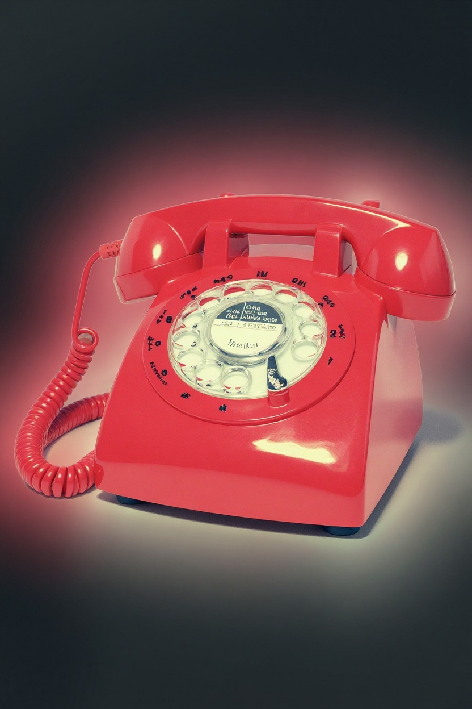

Rediscover the magic of simpler times with this nostalgic rotary phone.
The rotary dial's satisfying click and polished finish evoke nostalgia for old-fashioned conversations, reminiscent of a past era.
Display this classic piece and let it transport you to a time when life was a bit slower and every call was a special moment.